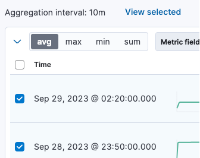
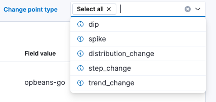
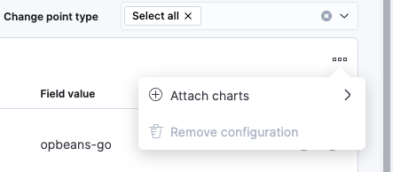

Detect change points
editThe change point detection feature in Elastic Observability Serverless detects distribution changes, trend changes, and other statistically significant change points in time series data. Unlike anomaly detection, change point detection does not require you to configure a job or generate a model. Instead you select a metric and immediately see a visual representation that splits the time series into two parts, before and after the change point.
Elastic Observability Serverless uses a change point aggregation to detect change points. This aggregation can detect change points when:
- a significant dip or spike occurs
- the overall distribution of values has changed significantly
- there was a statistically significant step up or down in value distribution
- an overall trend change occurs
To detect change points:
- In your Elastic Observability Serverless project, go to Machine learning → Change point detection.
- Choose a data view or saved search to access the data you want to analyze.
- Select a function: avg, max, min, or sum.
- In the time filter, specify a time range over which you want to detect change points.
- From the Metric field list, select a field you want to check for change points.
- (Optional) From the Split field list, select a field to split the data by. If the cardinality of the split field exceeds 10,000, only the first 10,000 values, sorted by document count, are analyzed. Use this option when you want to investigate the change point across multiple instances, pods, clusters, and so on. For example, you may want to view CPU utilization split across multiple instances without having to jump across multiple dashboards and visualizations.
You can configure a maximum of six combinations of a function applied to a metric field, partitioned by a split field, to identify change points.
The change point detection feature automatically dissects the time series into multiple points within the given time window, tests whether the behavior is statistically different before and after each point in time, and then detects a change point if one exists:
The resulting view includes:
- The timestamp of the change point
- A preview chart
- The type of change point and its p-value. The p-value indicates the magnitude of the change; lower values indicate more significant changes.
- The name and value of the split field, if used.
If the analysis is split by a field, a separate chart is shown for every partition that has a detected change point. The chart displays the type of change point, its value, and the timestamp of the bucket where the change point has been detected.
On the Change point detection page, you can also:
-
Select a subset of charts and click View selected to view only the selected charts.
 -
Filter the results by specific types of change points by using the change point type selector:
 -
Attach change points to a chart or dashboard by using the context menu:
